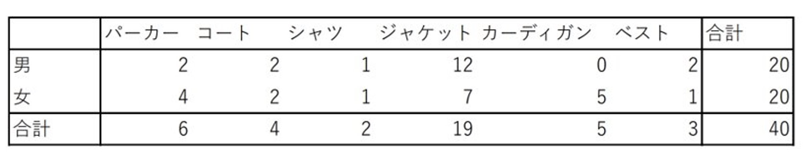

場所:

日時:2022年10月18日14時台
時間:約10分
方法:歩きながらスマートフォンで動画撮影、各自で動画をみながら集計。
結果:


以下はMARK ISみなとみらいの出口でおこなった定点観察の結果である。

定点観察では、
アウターを着ている人の割合は男女ともに37.0%だったのに対し、
移動観察では男性51.5%、女性57.8%だった。
また、MARK ISみなとみらいから出てくる人は、手に持っている人、腰に巻いている人がいたが、移動観察では見受けられなかった。
アウターを着ていない男性の中には、かぶりのパーカーを着ている人が多かった。
女性は薄着の人でも7分丈程度だったが、男性の中にはTシャツの人が数人いた。